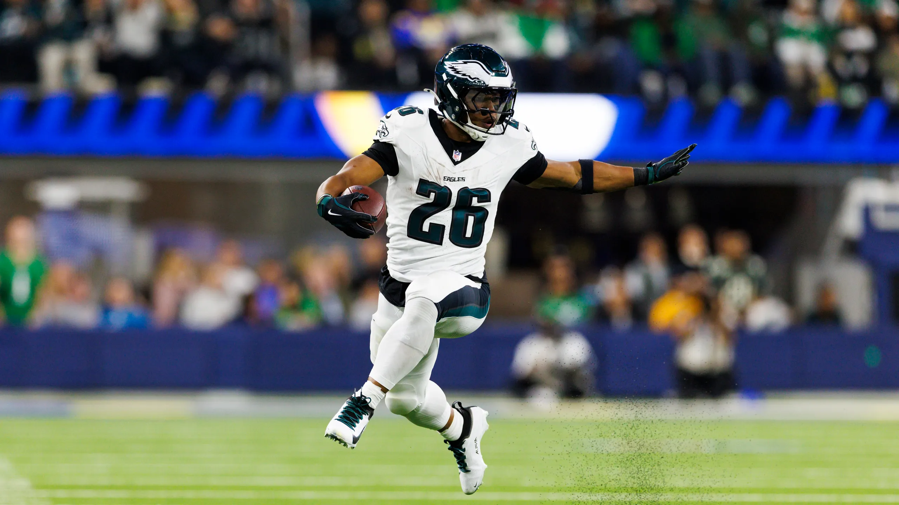

It’s the last week. Good season, fellas, There is lots to look forward to in the playoffs and the Cabana Boy bracket.
Week 13 Matchup Review
(#ranking is based on league standings)
Andy and PJ have clinched their spots in the playoffs. Seif hasn’t technically, but he’d need to give up more than 100 on PF, so let’s call that a sinch.
For the last spot, it all comes down to this.
Scenario One: With a one-game lead, if I win, I’m in.
Scenario Two: I lose.
Behind me at 7-5, there are four teams at 6-6: Neil, Chris, Pangy, and Kris. If I lose, and any of them win, it’s just about PF.
Strangely, none of them play against me or each other.
This presents us with a unique scenario. At a quick glance, it’d look like Kris and Pangy are pretty out of it, but shit, if one of them wins and the rest of us lose, they’re Kenny Powers (fucking in.) Or, if x amount of people win, they’ll be in a showdown.
Here’s how the PF currently stacks up:
- Jake: 1454.10
- Neil: 1453.26
- CJ: 1434.78
- Pangy: 1360.80
- Kris: 1311.34
Neil is just .84 behind me, seriously, less than a fucking reception. Behind him, CJ is less than 20 back, and Pangy ~15 behind him, before a bit of a drop off for Kris, but not insurmountable with a crazy week and the rest of us underachieving (shit this is kinda nuts).
Let’s take a look at what’s at stake on Thanksgiving, after that, figure it out yourselves, you Fnatasy Fucks.
#4 Jahmyr We Go Again (7-5) vs. #10 LaPorta Potty (2-10) Tony comes into this matchup following his upset over the #1 spot (PJ). Can he keep playing the spoiler?
Thanksgiving Preview: * Jake: GIBBS - Monty is questionable, and Thanksgiving is about the Lions. * Tony: If it’s about the Lions, it could just as easily be LaPorta, right? DJ Moore will be on the opposite side after last week’s highest finish of the season. But he also faces the #1 scoring defense against WRs.
# 3 Wont You Be My Nabers (7-5) vs. #8 Swift Loves Kelce (6-6) Kris has an uphill battle for the playoffs, and it looks similar for this matchup. Kris’ side is littered with orange and red matchups, but hope remains with Seif’s team that’s currently going through some major change.
Thanksgiving Preview: * Seif: Nabers. Who’s throwing to him, DeVito or Lock? You decide who’s better for Seif. CeeDee - yeah that Dallas situation is something. * Kris: Tua and Tyreek in the cold at GB - that hasn’t been a good combination in the past.
#6 Chris’ Cocaine Train (6-6) vs. #1 Mr. Turna 2-to-uh-4 (9-3) Chris is on a five-game winning streak with a chance at an amazing run to the playoffs.
Thanksgiving Preview: * CJ: Is Monty healthy? He said he’s going to play. Later in the evening, can Jacobs continue his hot streak against the Giants? * Andy: Not much here besides a piece-of-shit kicker (Aubrey) and St. Brown, who apparently is a game-time decision all of a sudden.
#5 Josh Allen’s Fat Hog (6-6) vs. #2 8==D (8-4) Neil’s creepin on that last spot, but PJ’s lineup has the highest projection this week… though Neil’s not far behind.
Thanksgiving Preview: * Neil: Tyrone Tracy (@ DAL) is back in the lineup for the not-so-Giants, and only Jason Sanders to boot. Doesn’t excite me. * PJ: De’Von Achne (@GB) - heard of him?
#7 Sweet Brotha Numpsay (6-6) vs. #9 Griddy Griddy Bang Bang (3-9) Joel’s squad looks as good as it has in a while, and he told me that he was “ready to end Pangy’s dreams”. Does Saquon have other thoughts?
Thanksgiving Preview: * Pangy: It’s the Packers in Grrrreeeeen Bay, versus the Dolphins offense who have been riding over the past couple of weeks. Seems a little dangerous. * Joel: Nothing. Joel is a huge Black Friday guy though, riding two Chiefs and their D on Friday night.
Good luck to everyone besides Neil, Chris, Chris and Kris! 👨🦰 👨 👨 👨
Love you guys, Happy Thanksgiving! 🦃 🍷 🏈 😴